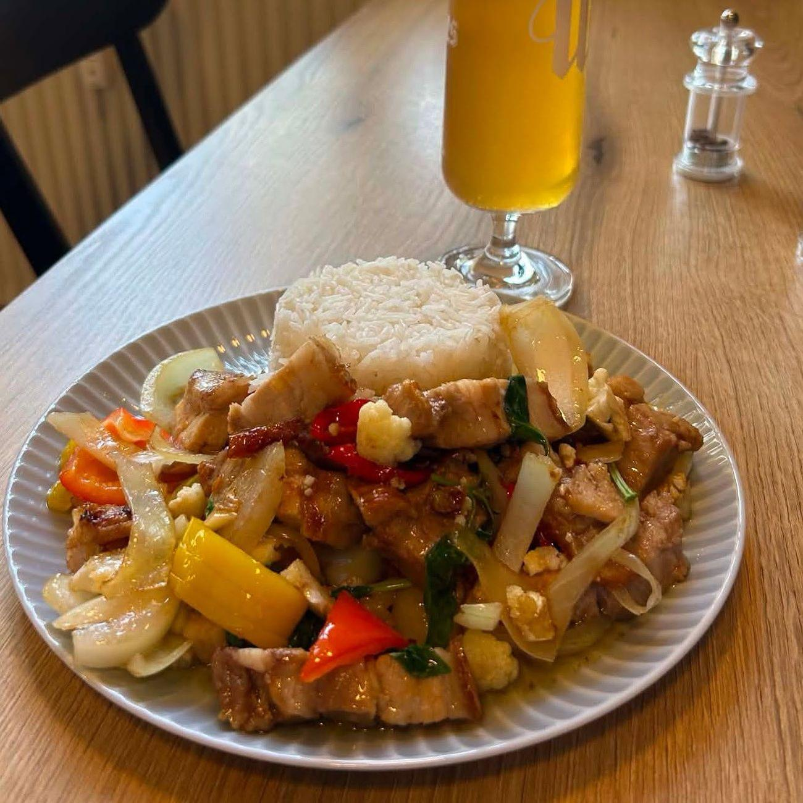

Thai på stationen
Rapheephons hjemmelavede thai
Rapheephon kører sit eget køkken ved siden af det danske. Ingen færdigretter: panang, stegte nudler og forårsruller laves fra bunden, hver gang.
Bestil takeaway: 30 80 72 41 Eller spis den her i caféen

Phad hmu krob, fra tavlen i august
Thai-kortet
frokost og aftenTavlen skifter ind imellem. Spørg efter dagens, eller kig forbi Facebook.
Sit eget køkken. Ved siden af det danske.
Rapheephon står for det thai, der er blevet fast inventar på stationen. Hun tager også imod gæsterne, så det er hende, du møder i døren.
Alt på thai-kortet kan spises i caféen eller tages med hjem. Ring på 30 80 72 41, så står det klar.
Thai med hjem i aften?
Ring 30 80 72 41
Tors–lør 12–20 · Søn 12–19 · Ons 16–20